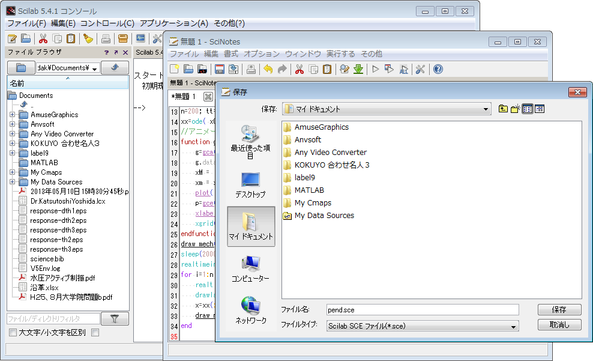

プロンプトにコマンドを打ち込む方法（対話的処理という）では，Scilabを終了すると，処理内容が消えてしまう． そこで，処理内容を記述したプログラム・ファイルを作り，これを一気に実行する方法がとられる（バッチ型処理）． 以下，必要な事項をまとめておく． エディタの起動 コンソールの「アプリケーション」メニューから sciNotes を起動する． この sciNotes でプログラム・ファイルを作成・保存・再編集する．
ファイルの作成と編集
起動した sciNotes に，例えば次の内容を 打ち込んでみよ（台車型振り子の力学シミュレーション）．
//運動方程式を解く
M=2/3; m=1/3; l=1;
function dx = eom(t,x) //運動方程式の定義
ft = 0.0; //← (1)ここに制御力！
A = [M+m, m*l*cos(x(3)); cos(x(3)), l];
b = [m*l*(x(4)**2)*sin(x(3))+ft; 9.8*sin(x(3))];
h = A\b; //(Aの逆行列)*bと同じ．inv(A)*bと書くより速い
dx(1) = x(2); dx(2) = h(1);
dx(3) = x(4); dx(4) = h(2);
endfunction
x0=[0; 0; 0.5; 0]; // ← (2)ここに初期値！
n=200; tt=linspace(0,25,n); //時間を表す等差数列
xx=ode( x0, 0, tt, eom ); //運動方程式を解く
//アニメーションする．
function draw_mech(x)
g=gca(); g.isoview="on"; //座標軸の取得; 縦横比1;
g.data_bounds=[-4,-1.5;4,1.5]; //座標軸の設定
xM = [x(1);0];
xm = xM + l*[sin(x(3));cos(x(3))];
plot([xM(1),xm(1)],[xM(2),xm(2)],'r-'); //振り子
p=gce();p.children.thickness=3; //直前の描画の線の太さ
xlabel("xx21xx"); //学籍番号
xgrid(2); //グリッドon
endfunction
draw_mech(x0); drawnow; //初期描画; 画面更新;
sleep(2000); //2秒待ち
realtimeinit(0.1); //アニメーションの時間刻み
for i=1:n //コマ送り
realtime(i); //リアルタイム更新設定
drawlater(); clf(); //描画延期; 画面消去
x=xx(:,i); //状態ベクトル取得
draw_mech(x); drawnow; //機構描画; 画面更新
end
ファイルの保存
sciNotes の「ファイル」メニューで保存を選び，ファイル名を「pend.sce」に変えて「ドキュメント」フォルダに保存する．
